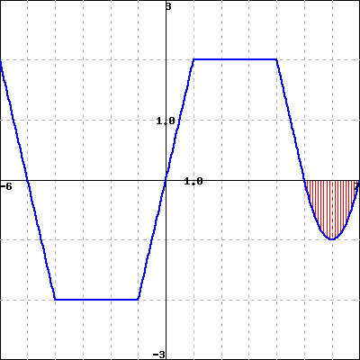
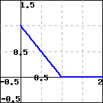
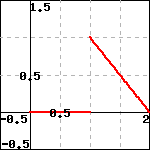
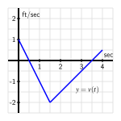

How does increasing the number of subintervals affect the accuracy of the approximation generated by a Riemann sum?
What is the definition of the definite integral of a function \(f\) over the interval \([a,b]\text{?}\)
What does the definite integral measure exactly, and what are some of the key properties of the definite integral?
In Figure 4.3.1, we see evidence that increasing the number of rectangles in a Riemann sum improves the accuracy of the approximation of the net signed area bounded by the given function.
Figure4.3.1.At left and center, two left Riemann sums for a function \(f\) that is sometimes negative; at right, the exact areas bounded by \(f\) on the interval \([a,d]\text{.}\)
We therefore explore the natural idea of allowing the number of rectangles to increase without bound. In an effort to compute the exact net signed area we also consider the differences among left, right, and middle Riemann sums and the different results they generate as the value of \(n\) increases. We begin with functions that are exclusively positive on the interval under consideration.
Initially, the calculator shows a left Riemann sum with \(n=5\) subintervals for the function \(f(x)=2x+1\) on the interval \([1,4]\text{.}\) Use the applet to compute the following sums for this function on this interval.
\(L_5 =\) , \(M_5 =\) , \(R_5 =\)
\(L_{25} =\) , \(M_{25} =\) , \(R_{25} =\)
\(L_{100} =\) , \(M_{100} =\) , \(R_{100} =\)
Now use basic geometry to determine the exact area bounded by \(f(x)=2x+1\) and the \(x\)-axis on the interval \([1,4]\text{.}\)
Exact Area =
Make a note of any patterns you observe.
Now update the calculator to consider the function \(f(x)=x^2+1\) on the same interval. Compute the following Riemann sums.
\(L_5 =\) , \(M_5 =\) , \(R_5 =\)
\(L_{25} =\) , \(M_{25} =\) , \(R_{25} =\)
\(L_{100} =\) , \(M_{100} =\) , \(R_{100} =\)
Note that the graph isn’t a familiar geometric shape, so you can’t use a geometric formula to calculate the exact area bounded by \(f(x)=x^2+1\) and the \(x\)-axis on the interval \([1,4]\text{.}\)
However, you can observe any patterns you see in the calculations above, and make an educated guess of the exact area bounded by \(f(x)=x^2+1\) and the \(x\)-axis on the interval \([1,4]\text{.}\)
Exact Area =
Subsection4.3.1The definition of the definite integral
In Preview Activity 4.3.1, we saw that as the number of rectangles got larger and larger, the values of \(L_n\text{,}\)\(M_n\text{,}\) and \(R_n\) all grew closer and closer to the same value. It turns out that this occurs for any continuous function on an interval \([a,b]\text{,}\) and also for a Riemann sum using any point \(x_{i+1}^*\) in the interval \([x_i, x_{i+1}]\text{.}\) Thus, as we let \(n \to \infty\text{,}\) it doesn’t really matter where we choose to evaluate the function within a given subinterval, because
That these limits always exist (and share the same value) when \(f\) is continuous 2  allows us to make the following definition.
Definition4.3.2.
The definite integral of a continuous function \(f\) on the interval \([a,b]\text{,}\) denoted \(\int_a^b f(x) \, dx\text{,}\) is the real number given by
where \(\Delta x = \frac{b-a}{n}\text{,}\)\(x_i = a + i\Delta x\) (for \(i = 0, \ldots, n\)), and \(x_i^*\) satisfies \(x_{i-1} \le x_i^* \le x_i\) (for \(i = 1, \ldots, n\)).
We call the symbol \(\int\) the integral sign, the values \(a\) and \(b\) the limits of integration, and the function \(f\) the integrand. The process of determining the real number \(\int_a^b f(x) \, dx\) is called evaluating the definite integral. While there are several different interpretations of the definite integral, for now the most important is that \(\int_a^b f(x) \, dx\) measures the net signed area bounded by \(y = f(x)\) and the \(x\)-axis on the interval \([a,b]\text{.}\)
For example, if \(f\) is the function pictured in Figure 4.3.3, and \(A_1\text{,}\)\(A_2\text{,}\) and \(A_3\) are the exact areas bounded by \(f\) and the \(x\)-axis on the respective intervals \([a,b]\text{,}\)\([b,c]\text{,}\) and \([c,d]\text{,}\) then
Figure4.3.3.A continuous function \(f\) on the interval \([a,d]\text{.}\)
We can also use definite integrals to express the change in position and the distance traveled by a moving object. If \(v\) is a velocity function on an interval \([a,b]\text{,}\) then the change in position of the object, \(s(b) - s(a)\text{,}\) is given by
If the velocity function is nonnegative on \([a,b]\text{,}\) then \(\int_a^b v(t) \,dt\) tells us the distance the object traveled. If the velocity is sometimes negative on \([a,b]\text{,}\) we can use definite integrals to find the areas bounded by the function on each interval where \(v\) does not change sign, and the sum of these areas will tell us the distance the object traveled.
To compute the value of a definite integral from the definition, we have to take the limit of a sum. While this is possible to do in select circumstances, it is also tedious and time-consuming, and does not offer much additional insight into the meaning or interpretation of the definite integral. Instead, in Section 4.4, we will learn the Fundamental Theorem of Calculus, which provides a shortcut for evaluating a large class of definite integrals. This will enable us to determine the exact net signed area bounded by a continuous function and the \(x\)-axis in many circumstances.
For now, our goal is to understand the meaning and properties of the definite integral, rather than to compute its value. To do this, we will rely on the net signed area interpretation of the definite integral. So we will use as examples curves that produce regions whose areas we can compute exactly through area formulas. We can thus compute the exact value of the corresponding integral.
For instance, if we wish to evaluate the definite integral \(\int_1^4 (2x+1) \, dx\text{,}\) we observe that the region bounded by this function and the \(x\)-axis is the trapezoid shown in Figure 4.3.4. By the formula for the area of a trapezoid, \(A = \frac{1}{2}(3+9) \cdot 3 = 18\text{,}\) so
Figure4.3.4.The area bounded by \(f(x)=2x+1\) and the \(x\)-axis on the interval \([1,4]\text{.}\)
Activity4.3.2.
Use known geometric formulas and the net signed area interpretation of the definite integral to evaluate each of the definite integrals below.
\(\displaystyle \int_0^1 3x \, dx\)
\(\displaystyle \int_{-1}^4 (2-2x) \, dx\)
\(\displaystyle \int_{-1}^1 \sqrt{1-x^2} \, dx\)
\(\int_{-3}^4 g(x) \, dx\text{,}\) where \(g\) is the function pictured in Figure 4.3.5. Assume that each portion of \(g\) is either part of a line or part of a circle.
Figure4.3.5.The function \(g\) for part (d). Note that \(g\) is piecewise defined, and each piece of the function is part of a circle or part of a line.
Subsection4.3.2Some properties of the definite integral
Regarding the definite integral of a function \(f\) over an interval \([a,b]\) as the net signed area bounded by \(f\) and the \(x\)-axis, we discover several standard properties of the definite integral. It is helpful to remember that the definite integral is defined in terms of Riemann sums, which consist of the areas of rectangles.
For any real number \(a\) and the definite integral \(\int_a^a f(x) \, dx\) it is evident that no area is enclosed, because the interval begins and ends with the same point. Hence,
If \(f\) is a continuous function and \(a\) is a real number, then \(\int_a^a f(x) \,dx = 0\text{.}\)
Next, we consider the result of subdividing the interval of integration. In Figure 4.3.6, we see that
While this rule is easy to see if \(a \lt b \lt c\text{,}\) it in fact holds in general for any values of \(a\text{,}\)\(b\text{,}\) and \(c\text{.}\) Another property of the definite integral states that if we reverse the order of the limits of integration, we change the sign of the integral’s value.
If \(f\) is a continuous function and \(a\) and \(b\) are real numbers, then
This result makes sense because if we integrate from \(a\) to \(b\text{,}\) then in the defining Riemann sum we set \(\Delta x = \frac{b-a}{n}\text{,}\) while if we integrate from \(b\) to \(a\text{,}\) we have \(\Delta x = \frac{a-b}{n} = -\frac{b-a}{n}\text{,}\) and this is the only change in the sum used to define the integral.
There are two additional useful properties of the definite integral. When we worked with derivative rules in Chapter 2, we formulated the Constant Multiple Rule and the Sum Rule. Recall that the Constant Multiple Rule says that if \(f\) is a differentiable function and \(k\) is a constant, then
These rules are useful because they allow to deal individually with the simplest parts of certain functions by taking advantage of addition and multiplying by a constant. In other words, the process of taking the derivative respects addition and multiplying by constants in the simplest possible way.
It turns out that similar rules hold for the definite integral. First, let’s consider the functions pictured in Figure 4.3.7.
Figure4.3.7.The areas bounded by \(y = f(x)\) and \(y = 2f(x)\) on \([a,b]\text{.}\)
Because multiplying the function by 2 doubles its height at every \(x\)-value, we see that the height of each rectangle in a left Riemann sum is doubled, \(f(x_i)\) for the original function, versus \(2f(x_i)\) in the doubled function. For the areas \(A\) and \(B\text{,}\) it follows \(B = 2A\text{.}\) As this is true regardless of the value of \(n\) or the type of sum we use, we see that in the limit, the area of the red region bounded by \(y = 2f(x)\) will be twice the area of the blue region bounded by \(y = f(x)\text{.}\) As there is nothing special about the value \(2\) compared to an arbitrary constant \(k\text{,}\) the following general principle holds.
Constant Multiple Rule.
If \(f\) is a continuous function and \(k\) is any real number, then
\begin{equation*}
\int_a^b k \cdot f(x) \,dx = k \int_a^b f(x) \,dx\text{.}
\end{equation*}
We see a similar situation with the sum of two functions \(f\) and \(g\text{.}\)
Figure4.3.8.The areas bounded by \(y = f(x)\) and \(y = g(x)\) on \([a,b]\text{,}\) as well as the area bounded by \(y = f(x) + g(x)\text{.}\)
If we take the sum of two functions \(f\) and \(g\) at every point in the interval, the height of the function \(f+g\) is given by \((f+g)(x_i) = f(x_i) + g(x_i)\text{.}\) Hence, for the pictured rectangles with areas \(A\text{,}\)\(B\text{,}\) and \(C\text{,}\) it follows that \(C = A + B\text{.}\) Because this will occur for every such rectangle, in the limit the area of the gray region will be the sum of the areas of the blue and red regions. In terms of definite integrals, we have the following general rule.
Use the provided information and the rules discussed in the preceding section to evaluate each of the following definite integrals.
\(\displaystyle \int_5^2 f(x) \, dx\)
\(\displaystyle \int_0^5 g(x) \, dx\)
\(\displaystyle \int_0^5 (f(x) + g(x))\, dx\)
\(\displaystyle \int_2^5 (3x^2 - 4x^3) \, dx\)
\(\displaystyle \int_5^0 (2x^3 - 7g(x)) \, dx\)
Subsection4.3.3How the definite integral is connected to a function’s average value
One of the most valuable applications of the definite integral is that it provides a way to discuss the average value of a function, even for a function that takes on infinitely many values. Recall that if we wish to take the average of \(n\) numbers \(y_1\text{,}\)\(y_2\text{,}\)\(\ldots\text{,}\)\(y_n\text{,}\) we compute
Since integrals arise from Riemann sums in which we add \(n\) values of a function, it should not be surprising that evaluating an integral is similar to averaging the output values of a function. Consider, for instance, the right Riemann sum \(R_n\) of a function \(f\text{,}\) which is given by
\begin{equation*}
R_n = f(x_1) \Delta x + f(x_2) \Delta x + \cdots + f(x_n) \Delta x = (f(x_1) + f(x_2) + \cdots + f(x_n))\Delta x\text{.}
\end{equation*}
Since \(\Delta x = \frac{b-a}{n}\text{,}\) we can thus write
We see that the right Riemann sum with \(n\) subintervals is just the length of the interval \((b-a)\) times the average of the \(n\) function values found at the right endpoints. And just as with our efforts to compute area, the larger the value of \(n\) we use, the more accurate our average will be. Indeed, we will define the average value of \(f\) on \([a,b]\) to be
But we also know that for any continuous function \(f\) on \([a,b]\text{,}\) taking the limit of a Riemann sum leads precisely to the definite integral. That is, \(\lim_{n \to \infty} R_n = \int_a^b f(x) \, dx\text{,}\) and thus taking the limit as \(n \to \infty\) in Equation (4.3.1), we have that
Equation (4.3.2) tells us another way to interpret the definite integral: the definite integral of a function \(f\) from \(a\) to \(b\) is the length of the interval \((b-a)\) times the average value of the function on the interval. In addition, when the function \(f\) is nonnegative on \([a,b]\text{,}\) Equation (4.3.2) has a natural visual interpretation.
Figure4.3.9.A function \(y = f(x)\text{,}\) the area it bounds, and its average value on \([a,b]\text{.}\)
Consider Figure 4.3.9, where we see at left the shaded region whose area is \(\int_a^b f(x) \, dx\text{,}\) at center the shaded rectangle whose dimensions are \((b-a)\) by \(f_{\operatorname{AVG} [a,b]}\text{,}\) and at right these two figures superimposed. Note that in dark green we show the horizontal line \(y = f_{\operatorname{AVG} [a,b]}\text{.}\) Thus, the area of the green rectangle is given by \((b-a) \cdot f_{\operatorname{AVG} [a,b]}\text{,}\) which is precisely the value of \(\int_a^b f(x) \, dx\text{.}\) The area of the blue region in the left figure is the same as the area of the green rectangle in the center figure. We can also observe that the areas \(A_1\) and \(A_2\) in the rightmost figure appear to be equal. Thus, knowing the average value of a function enables us to construct a rectangle whose area is the same as the value of the definite integral of the function on the interval. This applet 3  provides an opportunity to explore how the average value of the function changes as the interval changes, through an image similar to that found in Figure 4.3.9.
Activity4.3.4.
Suppose that \(v(t) = \sqrt{4-(t-2)^2}\) tells us the instantaneous velocity of a moving object on the interval \(0 \le t \le 4\text{,}\) where \(t\) is measured in minutes and \(v\) is measured in meters per minute.
Sketch an accurate graph of \(y = v(t)\text{.}\) What kind of curve is \(y = \sqrt{4-(t-2)^2}\text{?}\)
Evaluate \(\int_0^4 v(t) \, dt\) exactly.
In terms of the physical problem of the moving object with velocity \(v(t)\text{,}\) what is the meaning of \(\int_0^4 v(t) \, dt\text{?}\) Include units on your answer.
Determine the exact average value of \(v(t)\) on \([0,4]\text{.}\) Include units on your answer.
Sketch a rectangle whose base is the line segment from \(t=0\) to \(t = 4\) on the \(t\)-axis such that the rectangle’s area is equal to the value of \(\int_0^4 v(t) \, dt\text{.}\) What is the rectangle’s exact height?
How can you use the average value you found in (d) to compute the total distance traveled by the moving object over \([0,4]\text{?}\)
Subsection4.3.4Summary
Any Riemann sum of a continuous function \(f\) on an interval \([a,b]\) provides an estimate of the net signed area bounded by the function and the horizontal axis on the interval. Increasing the number of subintervals in the Riemann sum improves the accuracy of this estimate, and letting the number of subintervals increase without bound results in the values of the corresponding Riemann sums approaching the exact value of the enclosed net signed area.
When we take the limit of Riemann sums, we arrive at what we call the definite integral of \(f\) over the interval \([a,b]\text{.}\) In particular, the symbol \(\int_a^b f(x) \, dx\) denotes the definite integral of \(f\) over \([a,b]\text{,}\) and this quantity is defined by the equation
where \(\Delta x = \frac{b-a}{n}\text{,}\)\(x_i = a + i\Delta x\) (for \(i = 0, \ldots, n\)), and \(x_i^*\) satisfies \(x_{i-1} \le x_i^* \le x_i\) (for \(i = 1, \ldots, n\)).
The definite integral \(\int_a^b f(x) \,dx\) measures the exact net signed area bounded by \(f\) and the horizontal axis on \([a,b]\text{;}\) in addition, the value of the definite integral is related to what we call the average value of the function on \([a,b]\text{:}\)\(f_{\text{AVG} [a,b]} = \frac{1}{b-a} \cdot \int_a^b f(x) \, dx\text{.}\) In the setting where we consider the integral of a velocity function \(v\text{,}\)\(\int_a^b v(t) \,dt\) measures the exact change in position of the moving object on \([a,b]\text{;}\) when \(v\) is nonnegative, \(\int_a^b v(t) \,dt\) is the object’s distance traveled on \([a,b]\text{.}\)
The definite integral is a sophisticated sum, and thus has some of the same natural properties that finite sums have. Perhaps most important of these is how the definite integral respects sums and constant multiples of functions, which can be summarized by the rule
\begin{equation*}
\int_a^b [c f(x) \pm k g(x)] \,dx = c \int_a^b f(x) \,dx \pm k \int_a^b g(x) \,dx
\end{equation*}
where \(f\) and \(g\) are continuous functions on \([a,b]\) and \(c\) and \(k\) are arbitrary constants.
Exercises4.3.5Exercises
1.
Use the following figure, which shows a graph of \(f(x)\) to find each of the indicated integrals.
(Click on the graph for a larger version.)
Note that the first area (with vertical, red shading) is 39 and the second (with oblique, black shading) is 13.
A.\(\int_a^b f(x) dx =\)
B.\(\int_b^c f(x) dx =\)
C.\(\int_a^c f(x) dx =\)
D.\(\int_a^c |f(x)| dx =\)
2.
Use the graph of \(f(x)\) shown below to find the following integrals.

(Click on the graph for a larger version.)
A.\(\int_{-5}^0 f(x) dx =\)
B. If the vertical red shaded area in the graph has area \(A\text{,}\) estimate: \(\int_{-5}^{7} f(x) dx =\)
(Your estimate may be written in terms of \(A\text{.}\))
3.
Find the average value of \(f(x)=8 x + 4\) over \([2,6]\)
average value =
4.
Coal gas is produced at a gasworks. Pollutants in the gas are removed by scrubbers, which become less and less efficient as time goes on. The following measurements, made at the start of each month, show the rate at which pollutants are escaping (in tons/month) in the gas:
Time (months)
0
1
2
3
4
5
6
Rate
8
9
13
18
23
29
37
A. Make an overestimate and an underestimate of the total quantity of pollutants that escape during the first month.
overestimate = tons
underestimate = tons
B. Make an overestimate and an underestimate of the total quantity of pollutants that escape for the whole six months for which we have data.
overestimate =
underestimate =
5.
The following table gives the the approximate amount of emissions, \(E\text{,}\) of nitrogen oxides in millions of metric tons per year in the US. Let \(t\) be the number of years since 1940 and \(E=f(t)\text{.}\)
1940
1950
1960
1970
1980
1990
\(t\)
0
10
20
30
40
50
\(E\)
6.4
9.6
12.7
18
20.4
19.9
Estimate the integral: \(\int_0^{50}{f(t)dt} \approx\)
Be sure that you know what the units of your answer are, and what its meaning is!
(Original data from the Statistical Abstract of the US, 1992)
6.
The figure below to the left is a graph of \(f(x)\text{,}\) and below to the right is \(g(x)\text{.}\)


\(f(x)\)
\(g(x)\)
(a)
What is the average value of \(f(x)\) on \(0\le x\le 2\text{?}\)
avg value =
(b)
What is the average value of \(g(x)\) on \(0\le x\le 2\text{?}\)
avg value =
(c)
What is the average value of \(f(x)\cdot g(x)\) on \(0\le x\le 2\text{?}\)
Use the figure below, which shows the graph of \(y=f(x)\text{,}\) to answer the following questions.
(Click on the graph to get a larger version.)
A. Estimate the integral: \(\int_{-3}^3 f(x)\,dx \approx\)
(You will certainly want to use an enlarged version of the graph to obtain your estimate.)
B. Which of the following average values of \(f\) is larger?
Between \(x=-3\) and \(x=0\)
Between \(x=-3\) and \(x=3\)
9.
The velocity of an object moving along an axis is given by the piecewise linear function \(v\) that is pictured in Figure 4.3.10. Assume that the object is moving to the right when its velocity is positive, and moving to the left when its velocity is negative. Assume that the given velocity function is valid for \(t = 0\) to \(t = 4\text{.}\)
Write an expression involving definite integrals whose value is the total change in position of the object on the interval \([0,4]\text{.}\)
Use the provided graph of \(v\) to determine the value of the total change in position on \([0,4]\text{.}\)
Write an expression involving definite integrals whose value is the total distance traveled by the object on \([0,4]\text{.}\) What is the exact value of the total distance traveled on \([0,4]\text{?}\)
What is the object’s exact average velocity on \([0,4]\text{?}\)
Find an algebraic formula for the object’s position function on \([0, 1.5]\) that satisfies \(s(0) = 0\text{.}\)
Figure4.3.10.The velocity function of a moving object.
10.
Suppose that the velocity of a moving object is given by \(v(t) = t(t-1)(t-3)\text{,}\) measured in feet per second, and that this function is valid for \(0 \le t \le 4\text{.}\)
Write an expression involving definite integrals whose value is the total change in position of the object on the interval \([0,4]\text{.}\)
Use appropriate technology (such as an applet 4 ) to compute Riemann sums to estimate the object’s total change in position on \([0,4]\text{.}\) Work to ensure that your estimate is accurate to two decimal places, and explain how you know this to be the case.
Write an expression involving definite integrals whose value is the total distance traveled by the object on \([0,4]\text{.}\)
Use appropriate technology to compute Riemann sums to estimate the object’s total distance travelled on \([0,4]\text{.}\) Work to ensure that your estimate is accurate to two decimal places, and explain how you know this to be the case.
What is the object’s average velocity on \([0,4]\text{,}\) accurate to two decimal places?
11.
Consider the graphs of two functions \(f\) and \(g\) that are provided in Figure 4.3.11. Each piece of \(f\) and \(g\) is either part of a straight line or part of a circle.
Figure4.3.11.Two functions \(f\) and \(g\text{.}\)
Determine the exact value of \(\int_0^1 [f(x) + g(x)]\,dx\text{.}\)
Determine the exact value of \(\int_1^4 [2f(x) - 3g(x)] \, dx\text{.}\)
Find the exact average value of \(h(x) = g(x) - f(x)\) on \([0,4]\text{.}\)
For what constant \(c\) does the following equation hold?
Let \(f(x) = 3 - x^2\) and \(g(x) = 2x^2\text{.}\)
On the interval \([-1,1]\text{,}\) sketch a labeled graph of \(y = f(x)\) and write a definite integral whose value is the exact area bounded by \(y = f(x)\) on \([-1,1]\text{.}\)
On the interval \([-1,1]\text{,}\) sketch a labeled graph of \(y = g(x)\) and write a definite integral whose value is the exact area bounded by \(y = g(x)\) on \([-1,1]\text{.}\)
Write an expression involving a difference of definite integrals whose value is the exact area that lies between \(y = f(x)\) and \(y = g(x)\) on \([-1,1]\text{.}\)
Explain why your expression in (c) has the same value as the single integral \(\int_{-1}^1 [f(x) - g(x)] \, dx\text{.}\)
Explain why, in general, if \(p(x) \ge q(x)\) for all \(x\) in \([a,b]\text{,}\) the exact area between \(y = p(x)\) and \(y = q(x)\) is given by
It turns out that a function need not be continuous in order to have a definite integral. For our purposes, we assume that the functions we consider are continuous on the interval(s) of interest. It is straightforward to see that any function that is piecewise continuous on an interval of interest will also have a well-defined definite integral.